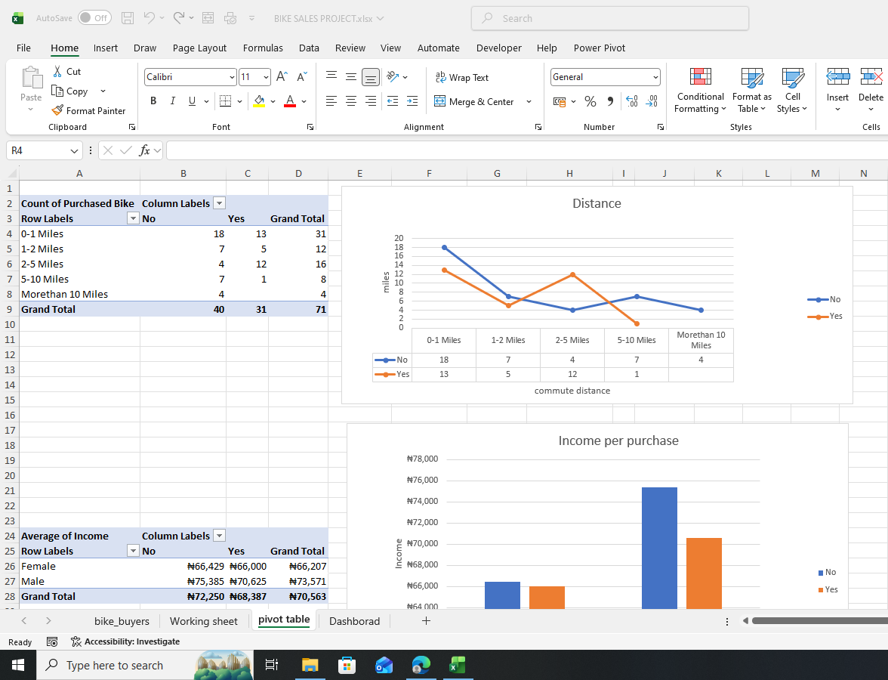
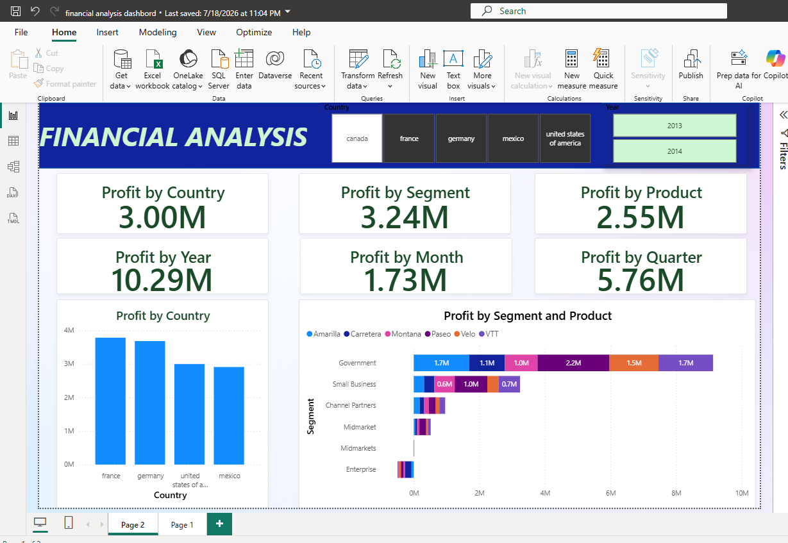
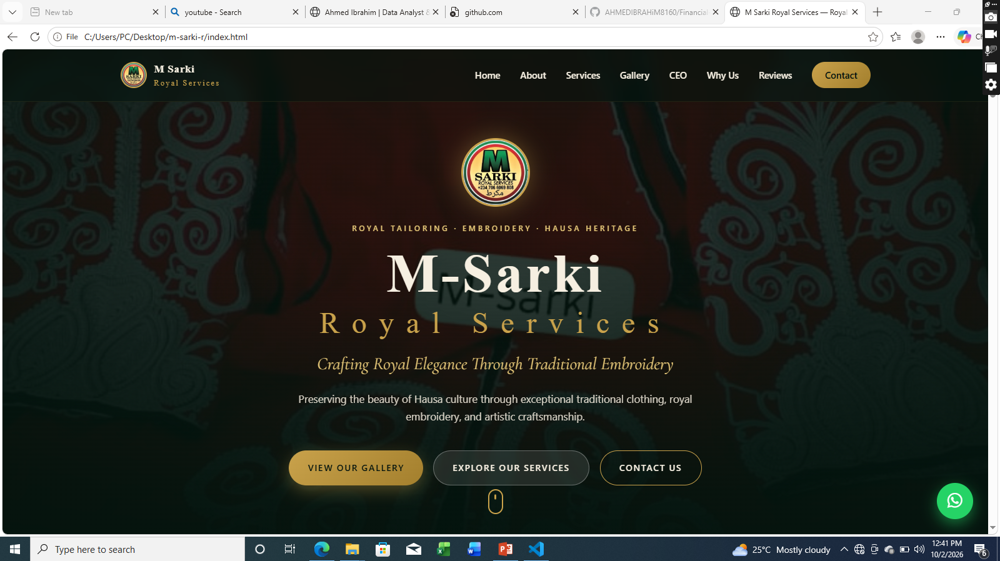
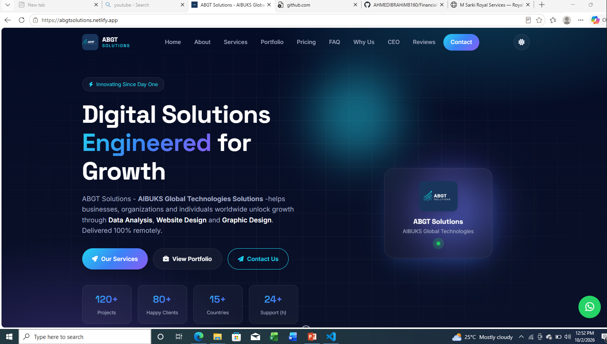
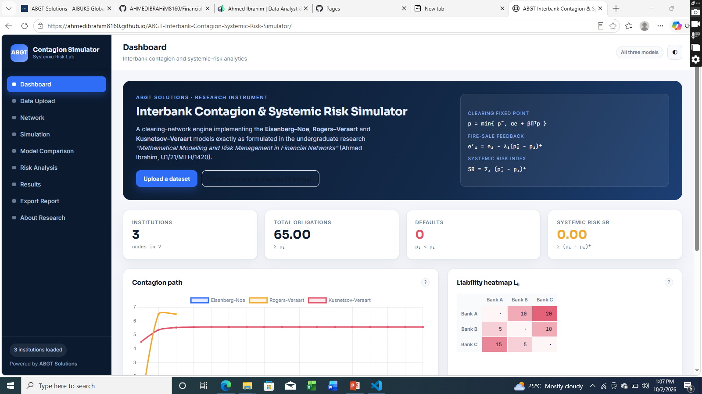

Sales Performance Analysis
Explored a sales dataset to identify performance trends, compare product categories and present key business indicators in an interactive dashboard.
↗ View Project
Data Analyst · Web Developer · Mathematics Graduate
HELLO, I'M
I am a Mathematics graduate and technology enthusiast who enjoys turning data into useful insights and building clean, practical digital experiences. I work across data analysis and web development, combining analytical thinking with creativity to solve real-world problems.
I turn raw data into meaningful insights using Excel, SQL, Power BI and Python.
Selected Data Analysis Projects
A collection of practical projects demonstrating data preparation, analysis and visual storytelling.
Explored a sales dataset to identify performance trends, compare product categories and present key business indicators in an interactive dashboard.
↗ View Project
Cleaned and prepared a dataset by addressing missing values, duplicate records, inconsistent formats and data quality issues.
↗ View Project
Designed a business intelligence dashboard to communicate trends and performance through clear visuals, KPIs and interactive filters.
↗ View ProjectI build responsive, user-friendly websites for businesses, services and digital projects.
Selected Web Development Projects
A showcase of responsive websites and digital tools built for real-world needs.

A business website for an embroidery and traditional clothing brand, designed to showcase services and make it easier for customers to connect.
↗ View Live Website
A company website concept for AIBUKS Global Technologies Solutions, presenting its services, portfolio and contact information.
↗ View Live Website
A front-end simulation tool developed from my final-year research on mathematical modelling and systemic risk in financial networks.
↗ View DemoMy background in Mathematics has shaped the way I approach problems: carefully, logically and with attention to detail. I enjoy learning, collaborating and applying technology to practical challenges.
Have a project, job opportunity or collaboration in mind? I'd be happy to hear from you.
I'm open to relevant opportunities, collaborations and conversations.